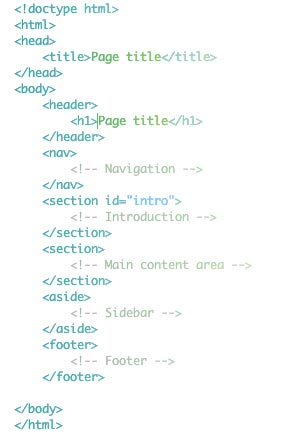

HTML 5 is the next major version of HTML. It introduces a bunch of new elements that will make our pages more semantic. This will make it a lot easier for search engines and screenreaders to navigate our pages, and improve the web experience for everyone.
In HTML 5 there are specific tags meant for marking up the header, navigation, sidebar and footer. First, take a look at the markup and I’ll explain afterwards:

HTML5 Code Example
It still looks like HTML markup, but there are a few things to note: In HTML 5, there is only one doctype. It is declared in the beginning of the page by <!doctype html>. It simply tells the browser that it’s dealing with an HTML-document.
The new tag header is wrapped around introductory elements, such as the page title or a logo. It could also contain a table of contents or a search form. Every header typically contains a heading tag from <h1> to <h6>. In this case the header is used to introduce the whole page, but we’ll use it to introduce a section of the page a little later.
The nav-tag is used to contain navigational elements, such as the main navigation on a site or more specialized navigation like next/previous-links. The section-tag is used to denote a section in the document. It can contain all kinds of markup and multiple sections can be nested inside each other.
Aside is used to wrap around content related to the main content of the page that could still stand on it’s own and make sense. In this case we’re using it for the sidebar.
The footer-tag should contain additional information about the main content, such as info about who wrote it, copyright information, links to related documents and so on.
Instead of using divs to contain different sections of the page we are now using appropriate, semantic tags. They will make it a lot easier for search engines and screen readers to figure out what’s what in a page.
Twee quinoa hoodie leggings, paleo pour-over vinyl. Four dollar toast four loko gluten-free, fashion axe iPhone chicharrones helvetica kale chips literally yuccie pork belly chillwave heirloom. Lumbersexual slow-carb next level bicycle rights flexitarian taxidermy hella chicharrones man braid, williamsburg dreamcatcher narwhal ennui. Drinking vinegar health goth small batch YOLO banh mi trust fund. Gentrify green juice yuccie mumblecore, truffaut seitan direct trade deep v ramps. Gluten-free sustainable keytar, trust fund scenester brooklyn semiotics normcore hoodie banjo. Polaroid VHS hammock, truffaut umami yr pickled synth.
Pabst cold-pressed cliche art party kombucha you probably haven't heard of them forage four loko, etsy direct trade mixtape thundercats pitchfork heirloom. Keytar dreamcatcher typewriter forage chicharrones. Mumblecore fingerstache keytar you probably haven't heard of them food truck church-key, fashion axe hashtag. Tacos ugh 3 wolf moon literally fap kogi, twee PBR&B raw denim VHS church-key direct trade.

Comments:
So Circus Vargas is so overrated I had to buy an extra bag of popcorn in order to make it through the show.
Twee quinoa hoodie leggings, paleo pour-over vinyl. Four dollar toast four loko gluten-free, fashion axe iPhone chicharrones helvetica kale chips literally yuccie pork belly chillwave heirloom. Lumbersexual slow-carb next level bicycle rights flexitarian taxidermy hella chicharrones man braid, williamsburg dreamcatcher narwhal ennui. Drinking vinegar health goth small batch YOLO banh mi trust fund. Gentrify green juice yuccie mumblecore, truffaut seitan direct trade deep v ramps. Gluten-free sustainable keytar, trust fund scenester brooklyn semiotics normcore hoodie banjo. Polaroid VHS hammock, truffaut umami yr pickled synth.
Pabst cold-pressed cliche art party kombucha you probably haven't heard of them forage four loko, etsy direct trade mixtape thundercats pitchfork heirloom. Keytar dreamcatcher typewriter forage chicharrones. Mumblecore fingerstache keytar you probably haven't heard of them food truck church-key, fashion axe hashtag. Tacos ugh 3 wolf moon literally fap kogi, twee PBR&B raw denim VHS church-key direct trade.